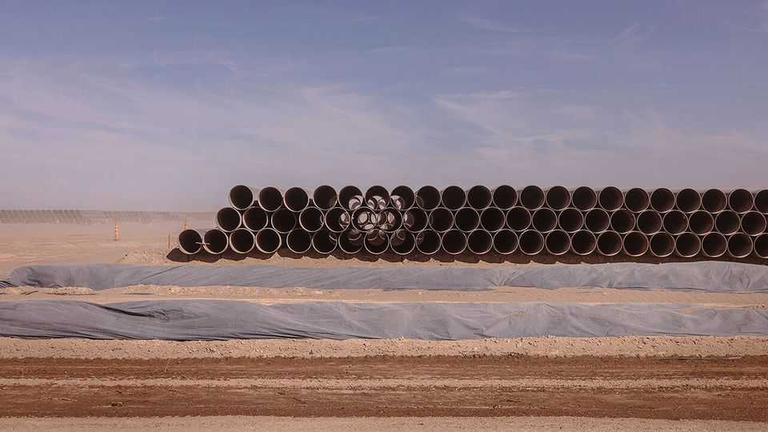
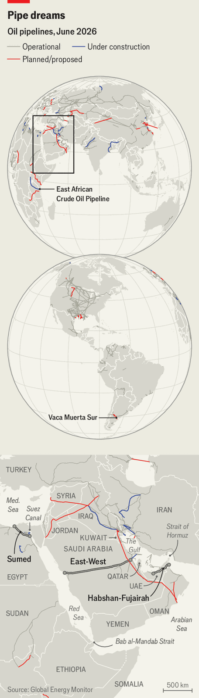
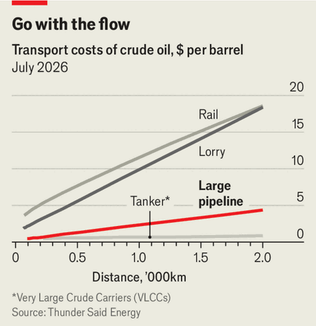

A global pipeline-investment boom is under way
New conduits for oil will improve energy security, but come at a cost

Aug 6th 2026
Among the legacies of the Middle East’s decades of conflict is a network of pipelines that seeks to divert the region’s oil to safer harbours. In 1968, after the six-day war closed the Suez Canal, Egypt and the Gulf states hatched a plan to build a 320km (200 mile) pipeline that would connect the Red Sea to the Mediterranean. But it was not until 1974, after the oil embargo brought on by the Yom Kippur war, that construction began on the Suez-Mediterranean (Sumed) pipeline. In 1977, the year Sumed came online, Mobil, an American oil giant, announced plans to build a 1,200km pipeline across Saudi Arabia, from the giant Ghawar oilfields near the Persian Gulf to the Red Sea. Construction of the East-West pipeline, completed in 1981, was hastened by the outbreak of the Iran-Iraq war the year before.
Today, with the Strait of Hormuz choked off, the various pipelines criss-crossing the region are of vital importance. On August 4th Aramco, Saudi Arabia’s oil colossus, noted that “strategic infrastructure”, including the East-West pipeline, had cushioned the blow from the Iran war. Its operating profit in the second quarter was up by 29%, year on year, as higher prices more than offset reduced volumes.

Now the region’s rulers are eager for more pipelines. The United Arab Emirates is looking to add one that will run alongside its Habshan-Fujairah pipeline, doubling its capacity. Last month America, Iraq and Qatar announced plans to upgrade a pipeline from Iraq to Syria. Chevron, an American oil major, is considering a series of pipelines from Iraq to Syria and Turkey. Aramco is also exploring investments.
All this will add to the pipeline boom under way across the globe. According to Global Energy Monitor, a research firm, about 12,300km of oil pipelines are under construction at present, with an additional 20,100km proposed, representing a significant expansion of the 350,000km of pipelines currently webbed around the world (see map).
Some of these pipelines are intended to improve the security of energy supply by circumventing chokepoints. Others are necessary to tap into new or expanding sources of supply. In Argentina, where oil production is soaring, development is under way on a 440km pipeline to connect the Vaca Muerta oilfields in the country’s west to the Atlantic. In east Africa a 1,440km pipeline is in the works to transport oil from inland Uganda to Tanzania’s coast to be exported.
The combined bill for these projects will be substantial. Helpfully, the growing appetite for infrastructure assets among investors is providing a ready source of capital. Pipeline-building is not for the faint-hearted, with construction frequently mired in regulatory delays and subject to geopolitical volatility. Yet the Iran war has heightened the need for such investments.
A large-diameter pipeline that can carry about 1m barrels of oil per day (b/d) costs on average about $5m per km to build, or around $5bn for a 1,000km pipeline. If it crosses mountains and other rugged terrain, however, the project’s cost can rise to multiples of that.
Yet there are rarely good alternatives. Transporting oil 1,000km over land via lorries or rail—where that is an option—is typically around five times more costly (see chart). (Syria’s oil-trucking route has thrived only because its pipeline network is in disrepair.) Maritime transport is far cheaper than pipelines, but is not always available or safe, and disruptions to supply can prove enormously expensive. “Stranded oil is valueless,” notes Rob West of Thunder Said Energy, another research firm. A disruption of 1m b/d for a year could cost perhaps $30bn.

Building a wider pipeline is often more cost-effective, but leaves those paying for it in a bind if volumes fall. That means it is essential for pipelines to consistently carry the amount of oil for which they were designed. Pipelines thus tend to operate based on “take-or-pay” agreements. Customers purchase a minimum amount from the pipeline or pay a set fee, often indexed to the price of oil over a decade or so. The arrangement guarantees a steady stream of cash, like a bond.
That has made pipelines an attractive asset to outside investors, with whom oil companies in the Gulf have cut a number of sale-and-leaseback deals in recent years. Oil companies part with a stake in a pipeline in return for an upfront payment, without relinquishing operational control. The deals reduce the strain on their balance-sheets and free up capital for other investments. Aramco is looking to strike more, having unlocked almost $40bn over the past five years.
Outside investors enjoy a reliable annual return of 6-8%. As a result, pipelines have been in high demand among the growing ranks of private-infrastructure funds, whose combined assets under management quadrupled to $1.6trn in the decade to 2025, according to McKinsey, a consultancy. On August 3rd KKR, an American private-asset giant, finished raising its largest-ever infrastructure fund, with a total value of $19bn. Last month, alongside Blackstone and Brookfield, two of its peers, the firm signed a $16bn deal with Kuwait’s oil company for a stake in the country’s pipeline network.
Risks are “more benign” than for other assets, says one infrastructure-fund boss. He compares a strike on a pipeline that can be repaired quickly with that on a storage facility or terminal that takes much longer to fix. Insurance offers a way to protect against conflicts and other sources of disruption. Governments looking to attract investment are also sometimes willing to cover these risks, notes the investor.
Yet building new pipelines remains a complicated endeavour. Goldman Sachs, an investment bank, notes that across a sample of nine pipelines, the average construction time was about 2.5 years. Longer pipelines, however, require many more permits, which can hold up development. Those that cross borders are more challenging still. In the past seven years about 35,000km-worth of pipelines have been shelved, according to Global Energy Monitor. That includes the giant Keystone XL pipeline connecting Canada to America, which was nixed by the Biden administration over environmental concerns. In the 1990s Iran, Pakistan and India agreed to build a gas pipeline spanning the three countries. India pulled out of the deal in 2009, and although construction began on the Iran-Pakistan connection in 2013 it has yet to be completed.
Even when they do get built, cross-border pipelines are exposed to spats between neighbours. An Iraqi pipeline through Saudi Arabia, for example, was shut off in 1990 during the first Gulf war. Another through Syria was closed in 1982 when the country took Iran’s side in the Iran-Iraq war.
Nevertheless, pipelines are likely to play an increasingly vital role in transporting the world’s hydrocarbons. On July 20th the Houthis, an Iran-allied rebel group in Yemen, declared they were blockading the Bab al-Mandab strait at the southern end of the Red Sea, through which tankers carrying Saudi oil from the East-West pipeline typically pass. Aramco then began using its tankers to take oil arriving from the country’s east up to the Red Sea, to the Sumed pipeline and on to the Mediterranean. Even that conduit, however, is operating more or less at full capacity. Demand for more pipelines is unlikely to abate. ■